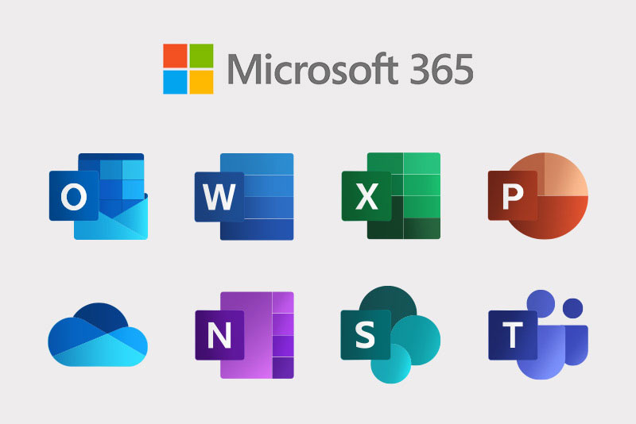

Investigaciones cortas
Diseño web centrado en el usuario (DCU)
Es un método en que el diseño de la página web se lleva totalmente de la mano con el usuario, buscando desarrollar una página amigable y con una tasa de éxito alta, realizando pruebas con usuarios reales, que nos van a ayudar a encontrar falencias que los desarrolladores no previeron, con esta técnica se busca disminuir la tasa de rebote en nuestro sitio web y mejorar la experiencia del usuario al navegar en nuestro sitio.
Pasos para el DCU
- Identificar y Definir Usuarios
Debemos realizar un estudio de los usuarios que puedan llegar a usar nuestro sitio web, para hacer una buena elección de las personas que estarán realizando las pruebas. - Tareas y Metas de los Usuarios
Define las acciones que debe realizar un usuario para obtener las características de un producto o un servicio, hasta que las encuentre mediante una interacción continua con el sitio web. - Funciones del Sitio Web
La funcionalidad del sitio va muy de la mano con el usuario y el diseño práctico que se le dé a la página web, Por ejemplo, si un cliente busca productos puede utilizar el menú, para una navegación más fácil. - Realizar diferentes pruebas de usuario
Es fundamental que los usuarios prueben nuestro sitio web y mediante encuentas puedan expresar sus opiniones y críticas, para así poder mejorar la experiencia de uso en nuestra página web. - Analizar y utilizar los resultados de la prueba
Una vez finalizadas las etapas de pruebas, debemos hacer un estudio sobre que debemos mejorar y ponernos manos a la obra para lograr ofrecer un servicio óptimo y de gran calidad.
Beneficios del DCU
- Mejora el rendimiento
Al reducir el número de errores para el usuario y aumentar la facilidad de uso y de aprendizaje (usabilidad). - Aumenta el tráfico
Al mejorar el número usuarios que regresan, el de nuevos usuarios y las visitas orgánicas. - Mejora la credibilidad
Al incrementar la satisfacción y la confianza del usuario y en consecuencia, las referencias positivas - Reduce los costes
Mediante los tiempos de desarrollo, obteniendo un resultado efectivo sin gastar tanto tiempo en diseños que no se atractivos. - Aumenta los beneficios
Potenciando el tráfico de usuarios y las ventas en nuestro sitio web.
Ejemplos DCU
| Aplicación | Funcionalidad | |
|---|---|---|
| Microsoft | Microsoft es un claro ejemplo de DCU, convirtiendose en una de las plataformas más utilizadas a nivel mundial gracias a sus herramientas que llegan a solventar las necesidades de sus usuarios con servicios útiles y que cualquier persona puede hacer uso. |  |
| Waze | Waze ofrece una experiencia personalizada para cada usuario, por ejemplo el uso de distintas voces para las indicaciones y el excelente rendimiento que nos ofrece optimizando las rutas, pensando en lo valioso que es el tiempo del usuario | |
| YouTube | YouTube es una web que nos enseña mucho sobre el DCU, desde todas las mejoras de calidad de video que ofrecen, hasta los algoritmos que nos muestra videos similares a los que hemos visto antes, además de que es una plataforma muy amigable con el usuario, ofreciendo fácilidad de navegación y un buscador rápido y efectivo |  |